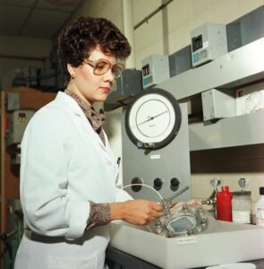

Nació en 1955 en Patillas, Puerto Rico. Estudió ingeniería química y comenzó su carrera en el Centro de Investigación Glenn de la NASA.
Su trabajo más importante fue el desarrollo de las baterías de hidruro metálico, que permitieron misiones más largas y seguras en la Estación Espacial Internacional.
Estas baterías siguen siendo esenciales para la tecnología aeroespacial moderna. Fue la mujer hispana de mayor rango dentro de su centro de investigación.
Recibió reconocimientos de la NASA por contribuciones excepcionales. Además, impulsó la participación femenina y latina en ingeniería mediante mentorías y programas educativos.
Su legado muestra cómo la innovación puede transformar la exploración espacial. Su historia sirve de inspiración para mujeres interesadas en ingeniería y ciencias aplicadas.
Es un ejemplo de disciplina, compromiso y visión tecnológica. Su trabajo ha permitido avances energéticos cruciales en el espacio. Aunque no es muy conocida públicamente, su impacto es gigantesco.
Continúa siendo una figura de referencia en la NASA.